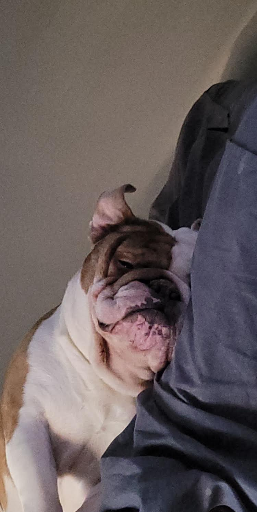
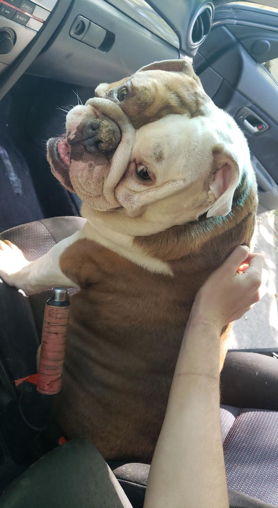
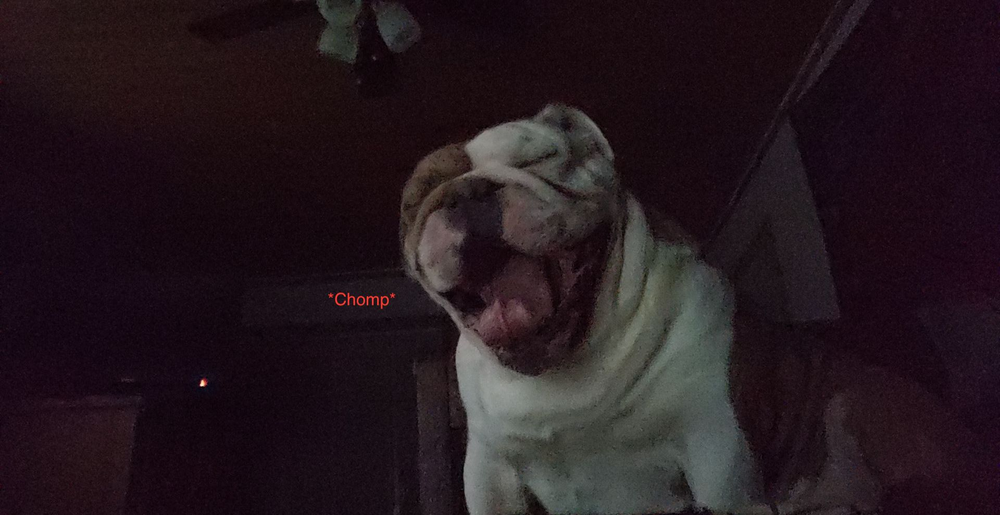

Savage is honestly a rather lazy dog, but I am here to embellish his story!!
 Savage is an English bulldog that i've had for 4 years. His My sister brought him from Nashvile, he was a very skiddish dog at first. Savage stayed by my sister until she had to go back to Nashvile; She woke me up at 7am to lay beside Savage as he slept. When he saw my face beside him instead of my sisters he looked scared but he eventually relaxed to me and he slept for a few more hours. Since that day, Savage follows me everywhere. He rarely leaves my bed while im at school, he just sleeps until I get home and he just lights up.
My dog loves car rides, he will try and follow me out of the door when I leave. The picture on top was trip to the vet!... He was not that happy when he relaized where we were at. The picture on the bottom is when I got my first car and me and him went on a drive. He loves to just go out and see the world, but I have to keep his window up becuase he's almost jumped out the window a few times.
Honestly, the picture speaks for itself. Savage drools for human food. The worst is with pizza, he will constantly salivate on his first whiff of pizza...then the flood gates open up; until theres half of an olympic swimming pool worth of dog drool on my floor
Savage likes to roll around a lot in his sleep. With his 75lbs of muscle rolling around, I have woken up in my floor from him pushing me off... more than once. its been a year since he's last done it, but I still live in fear
